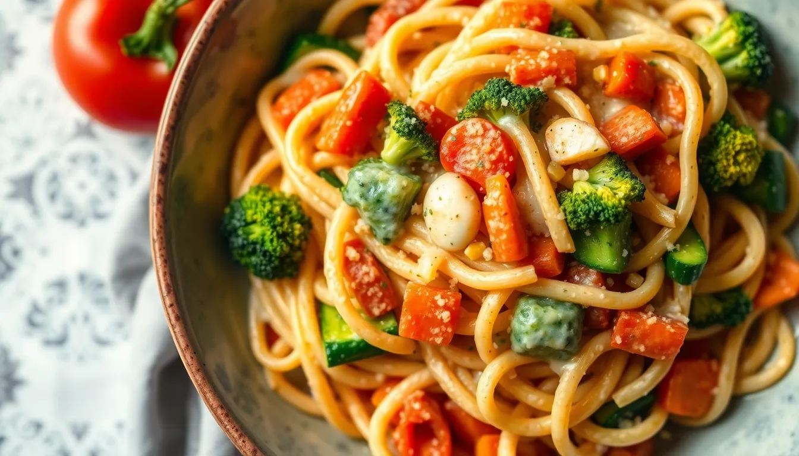

Pasta Primavera
Prep time: 15 minutes - Cook time: 20 minutes - Total time: 35 minutes
Estimated total cost: $14.20 - Estimated cost per serving: $3.55 - Serves: 4

Ingredients
- 8 ounces pasta — $1.20
- 1 zucchini, sliced thin — $1.20
- 1 bell pepper, sliced — $1.50
- 1 cup broccoli florets — $1.20
- 1 carrot, sliced thin — $0.30
- 1 small onion, sliced — $0.80
- 3 cloves garlic, minced — $0.30
- 1 tablespoon oil — $0.20
- 3/4 cup plant milk — $0.45
- 1 tablespoon flour — $0.05
- 2 tablespoons nutritional yeast, optional — $0.60
- 1/2 teaspoon Italian seasoning — $0.05
- 1/2 teaspoon salt — $0.05
- 1/4 teaspoon black pepper — $0.05
- Optional: lemon juice or parsley — $0.40
Estimated ingredient total: $7.95 to $8.35
Displayed planning estimate: $14.20
Detailed Instructions
- Bring a pot of salted water to a boil and cook the pasta according to package directions.
- While the pasta cooks, slice the zucchini, bell pepper, carrot, onion, and broccoli into bite-sized pieces.
- Heat the oil in a large skillet over medium heat.
- Add the onion, zucchini, bell pepper, broccoli, and carrot and cook for 5 to 7 minutes, stirring often, until the vegetables are just tender.
- Add the garlic and cook for 30 seconds.
- Sprinkle in the flour and stir well so it coats the vegetables.
- Slowly pour in the plant milk, stirring to keep the sauce smooth.
- Add the Italian seasoning, salt, black pepper, and nutritional yeast if using.
- Simmer for 2 to 3 minutes until the sauce lightly thickens.
- Drain the pasta and add it to the skillet.
- Toss everything together until the pasta is coated and the vegetables are evenly distributed.
- Add a squeeze of lemon juice or a sprinkle of parsley if using, then serve warm.
Helpful Notes
- Frozen mixed vegetables can work if you want an even cheaper shortcut version.
- This is best when the vegetables stay slightly crisp instead of fully soft.
- A splash of pasta water can loosen the sauce if needed.
Price Note
Ingredient prices can vary by store, brand, and region, so these are planning estimates rather than exact totals.